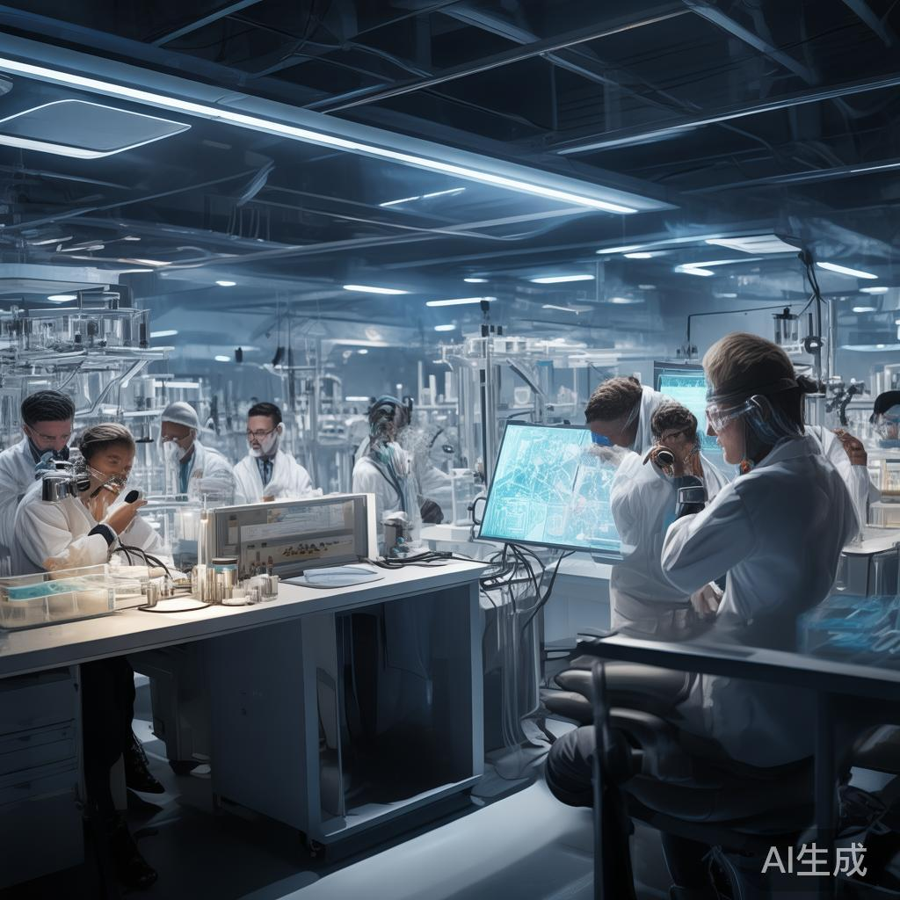
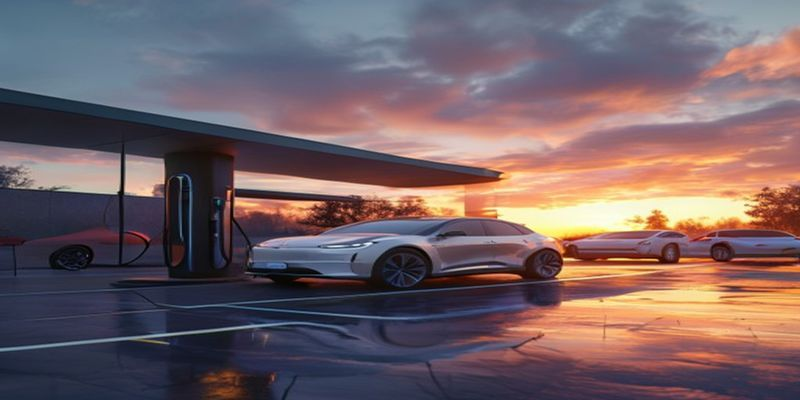
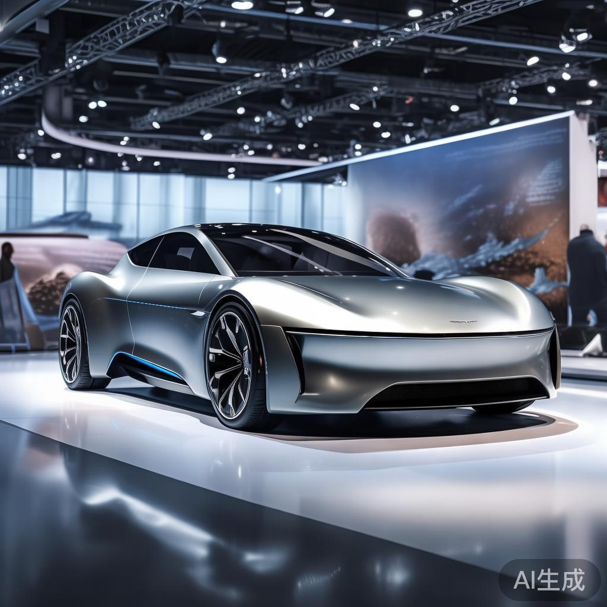

全球最大碳捕集设施在冰岛正式投入运营
全球规模最大的直接空气碳捕集设施近日在冰岛正式启用，每年可从大气中吸收3.6万吨二氧化碳。该设施采用模块化设计，利用可再生能源驱动，捕集的碳将永久封存于地下玄武岩岩层中。这一里程碑式的项目标志着人类应对气候变化进入新阶段，多国政府表示将加大对类似技术的投资支持。
联合国安理会通过人工智能军事应用决议草案
联合国安理会日前以压倒性多数通过首份关于人工智能军事应用的行为准则草案，要求各国限制自主武器系统的使用场景，并建立跨国信息共享机制。草案同时设立专项基金，支持发展中国家提升AI治理能力。中方代表表示，该决议具有积极意义，但仍需进一步完善执行机制。
SpaceX星舰完成首次商业载荷发射任务
SpaceX宣布其星舰系统完成首次商业载荷发射任务，成功将一组通信卫星送入地球同步轨道。此次任务验证了星舰的重复使用能力，发射塔成功捕获了一级助推器，二级飞船也按计划返航回收。业内人士指出，这一突破将使卫星发射成本大幅下降，并加速太空资源开发进程。
全球供应链危机再现芯片短缺局面
受地缘政治影响和AI算力需求激增的双重推动，全球半导体供应链再次出现紧张态势。从汽车到消费电子，多个行业面临芯片交付延迟问题。台积电、三星等主要晶圆厂已宣布扩大产能计划，但产能释放仍需时日。业界呼吁建立更加多元化的芯片制造体系，以降低供应链风险。

日本成功研发全球首款脑机接口义肢
日本东京大学研究团队宣布研发出全球首款商业化脑机接口智能义肢，该设备可通过解码大脑神经信号实现精细动作控制，响应延迟低于50毫秒。首批临床试验显示，截肢患者使用该义肢后可完成打字、握笔等复杂动作。研究团队表示将在明年启动大规模临床试验，力争三年内实现量产。
欧洲多国遭遇极端高温提前来袭
受异常大气环流影响，欧洲多国五月中旬即出现35度以上高温天气，多地气温创下历史同期纪录。法国、西班牙、意大利等国已发布高温预警，部分地区学校暂停户外课程。专家指出，受全球变暖趋势影响，极端高温事件正变得更加频繁，各国需加快适应气候变化的基础设施建设。
中国自贸试验区推出跨境数据流动新政
国务院批准在现有自贸试验区基础上设立跨境数据流动示范区，允许符合条件的跨国企业在华设立数据中心并进行国际数据传输。政策同时明确了数据分类分级管理规则，在保障国家数据安全的前提下，最大限度释放数字经济活力。多家人工智能企业表示将利用新政策扩大在华研发布局。
新型忆阻器将计算能效提升百倍
美国麻省理工学院团队研发出一种新型存算一体忆阻器阵列，可在单个芯片上同时完成数据存储与计算，能效比较传统方案提升超过一百倍。该技术有望彻底解决AI大模型运行的高能耗困境。相关论文已发表于《自然》杂志，多家芯片巨头表达技术许可意向，预计五年内可实现商业化落地。
巴西亚马逊雨林砍伐面积创历史新低
巴西环境部公布数据显示，得益于无人机巡检和社区护林员制度的推广，亚马逊雨林年度砍伐面积较峰值下降78%，创二十年新低。国际社会对此表示欢迎，多个国家和组织承诺向巴西提供额外气候融资支持。环保组织同时提醒，持续的财政支持对于巩固保护成果至关重要。

全球电动汽车市场份额首超燃油车
国际能源署最新报告显示，今年第一季度全球电动汽车销量占汽车总销量的53%，首次超越传统燃油车。中国、欧洲市场需求持续强劲，美国市场增速超出预期。分析认为，电池成本持续下降和充电基础设施完善是推动渗透率攀升的主要因素，但锂、钴等关键矿产的供应保障仍是行业面临的重要挑战。
月球科研站项目获得多国正式签署
中国与俄罗斯联合倡议的月球科研站项目在维也纳举行签署仪式，共有十八个国家正式加入该项目。各方同意在联合国和平利用外层空间委员会框架下开展合作，共同推进月球表面科研设施的建设与运营。首批项目包括月面天文台和资源原位利用试验平台，预计2030年前完成部署。
全球珊瑚白化危机持续加剧
澳大利亚大堡礁管理局发布报告显示，受海水温度持续偏高影响，大堡礁今年再次发生大规模白化事件，受影响珊瑚比例超过40%。科学家警告称，如果全球升温控制在1.5摄氏度以内的窗口期不能把握，全球九成以上的珊瑚礁将面临灭绝风险。各国正就珊瑚礁保护加大科研投入。
量子计算进入实用化阶段
IBM与谷歌相继宣布其量子计算系统已在特定优化问题上实现量子优势，并开始向金融机构和制药企业提供商业化云计算服务。量子计算机在药物分子模拟、金融组合优化等场景展现出超越经典计算机的强大能力。专家指出，量子纠错技术的突破是实现实用化的关键转折点。
土耳其与希腊边境再现移民危机
土耳其与希腊边境近日再次出现大规模移民聚集，数千名来自中东和非洲的移民试图进入欧盟境内。欧盟紧急召开会议商讨对策，决定向希腊提供额外边境管控资金。人权组织则呼吁各方在加强边境管理的同时，确保移民的基本权利得到保障。
全球数字税改革谈判取得突破
经济合作与发展组织宣布，140个参与数字税改革谈判的国家就全球最低企业税率框架的实施细则达成历史性共识。跨国科技巨头将按照新的公式在各国缴税，大型科技公司的实际税率预计将明显上升。协议同时建立了争端解决机制，为发展中国家维护税收权益提供了新工具。
深海采矿规则国际谈判启动
国际海底管理局就深海矿产资源开发规章草案开放全球咨询，草案规定了深海采矿的环境影响评估标准和恢复性复垦要求。海洋科学家警告深海开采可能对生态系统造成不可逆破坏，呼吁将更多海域列为保护禁区。相关谈判结果将影响价值数万亿美元的深海矿产资源开发前景。
阿尔茨海默病新药三期试验效果积极
美国制药公司礼来宣布其阿尔茨海默病新药Donanemab的三期临床试验达到主要终点，接受治疗的患者认知功能下降速度减缓35%。该药通过清除大脑中的β-淀粉样蛋白斑块发挥作用。FDA已授予其突破性疗法资格，新药上市申请正在审批中，预计将为数百万患者带来新希望。

全球粮食价格指数连续三个月回落
联合国粮农组织公布数据显示，全球食品价格指数已连续三个月下行，主要受谷物、植物油供应改善以及运价回调影响。小麦、玉米价格较年初高点下降超过20%。但粮农组织警告，气候异常和地区冲突仍可能扰动粮食供应链，部分低收入国家的粮食安全形势依然严峻。
6G标准制定工作正式启动
国际电信联盟在日内瓦召开第六代移动通信技术标准制定首次会议，来自全球五十多个国家的代表参会。会议确立了6G技术六大应用场景和十五项核心能力指标。中国、美国、欧盟、日本、韩国均派出大型代表团参与争夺标准话语权。6G网络预计将在2030年前后开始商用部署。
全球多国联合打击野生动植物走私
国际刑警组织协调全球四十三个国家和地区开展代号为「雷霆」的联合打击行动，成功摧毁二十三个跨国野生动植物走私网络，查获象牙、犀牛角、珍稀兰花等非法制品总价值超过三亿美元。行动同时捣毁了多个非法猎杀营地和跨境走私通道，有效震慑了野生动植物犯罪网络。
💬 评论区